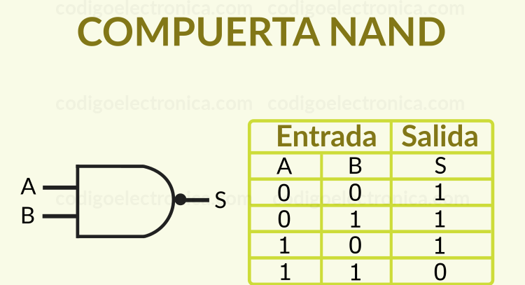

COMPUERTAS LÓGICAS
¿Qué son las compuertas lógicas?
Son componentes electrónicos que realizan operaciones básicas de lógica booleana, procesando señales digitales (0 y 1). Funcionan con voltajes donde 0 es baja tensión y 1 es alta tensión.
Tipos de compuertas lógicas:
- AND (Y): Solo da 1 si todas sus entradas son 1.
- Ejemplo: 1 y 1 = 1, pero 1 y 0 = 0.
- OR (O): Da 1 si al menos una entrada es 1.
- Ejemplo: 1 o 0 = 1.
- NOT (NO): Invierte el valor (0 a 1, 1 a 0).
- Ejemplo: NO 1 = 0.
- NAND (NO Y): Es una AND invertida (da 0 solo si todas son 1).
- Ejemplo: 1 y 1 = 0.
- NOR (NO O): Es una OR invertida (solo da 1 si todas son 0).
- Ejemplo: 0 o 0 = 1.
- XOR (O exclusiva): Da 1 si las entradas son diferentes.
- Ejemplo: 1 y 0 = 1, pero 1 y 1 = 0.
- XNOR (O exclusiva negada): Da 1 solo si las entradas son iguales.
- Ejemplo: 1 y 1 = 1, 0 y 0 = 1.

Aplicaciones comunes:
- Electrónica digital: Calculadoras, relojes, computadoras.
- Control de sistemas: Encendido de motores, control de luces.
- Circuitos de seguridad: Alarmas o bloqueos.
- Comunicación: Codificación y decodificación de datos.
Funciones clave:
- Procesan señales binarias.
- Toman decisiones lógicas en los circuitos.
- Combinadas crean sistemas más complejos como sumadores o microprocesadores.
TERMINALES DE CADA COMPUERTA
Compuerta AND
- Entradas: 2 o más
- Salida: 1
- Función: Da 1 solo si todas las entradas son 1
- Ejemplo: A = 1, B = 1 → salida = 1

Compuerta NOT
- Entrada: 1
- Salida: 1
- Salida: 1
- Función: Invierte el valor de la entrada.
- Ejemplo: A = 1 → salida = 0

Compuerta OR
- Entradas: 2 o más
- Salida: 1
- Función: Da 1 si al menos una entrada es 1.
- jemplo: A = 1, B = 0 → salida = 1
Compuerta NAND
- Entradas: 2 o más
- Salida: 1
- Función: Es la inversa de AND, da 0 solo si todas las entradas son 1.
- Ejemplo: A = 1, B = 1 → salida = 0

Compuerta NOR
- Entradas: 2 o más
- Salida: 1
- unción: Es la inversa de OR, da 1 solo si todas las entradas son 0.
- Ejemplo: A = 0, B = 0 → salida = 1
Compuerta XOR (O Exclusiva)
- Entradas: 2
- Salida: 1
- Función: Da 1 solo si las entradas son diferentes.
- Ejemplo: A = 1, B = 0 → salida = 1
Compuerta XNOR (O Exclusiva Negada)
- Entradas: 2
- Salida: 1
- Función: Da 1 solo si las entradas son iguales.
- Ejemplo: A = 1, B = 1 → salida = 1

Resumen de terminales básicos:
- VCC: Alimentación positiva (5V comúnmente).
- GND: Tierra.
- Entradas (A, B, C...): Donde se conectan los datos binarios.
- Salida (Q): La respuesta lógica del circuito.